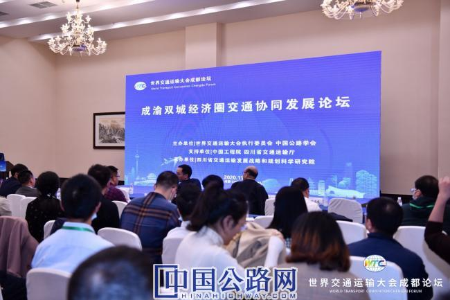
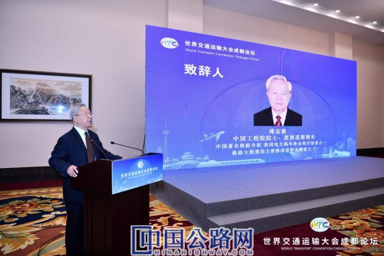
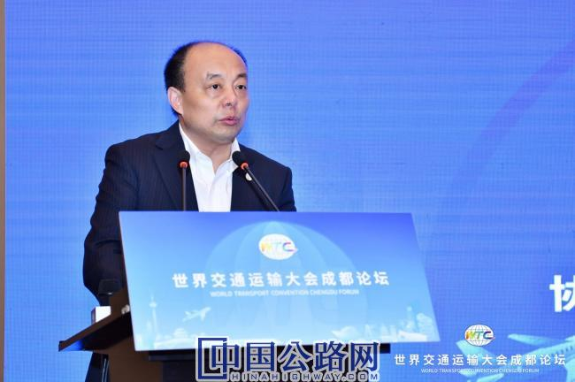
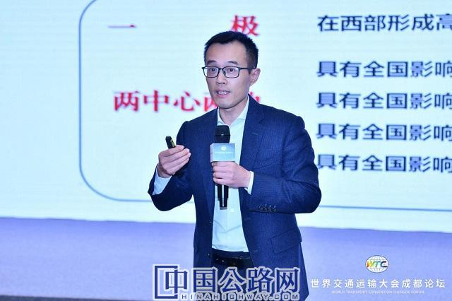
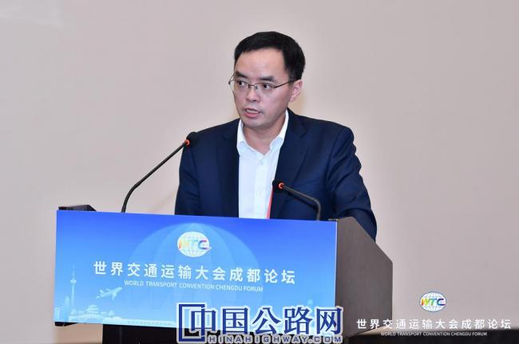
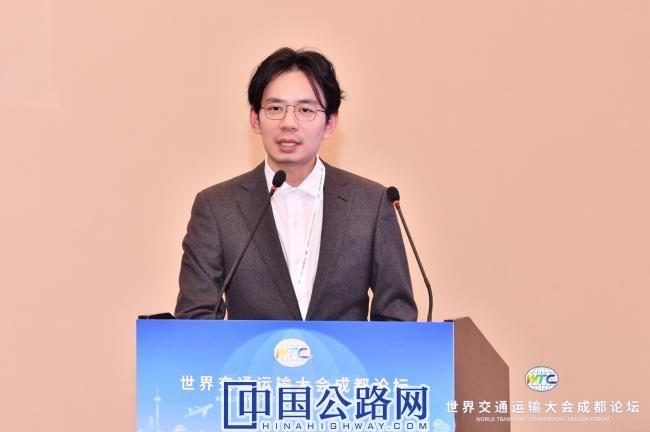
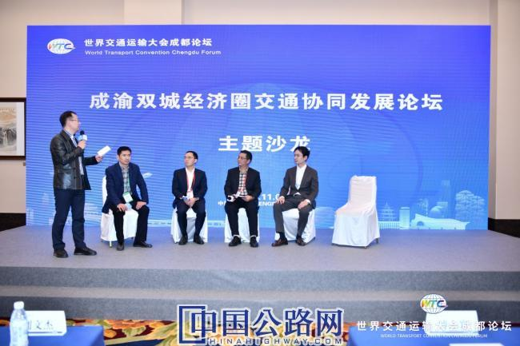

您好，欢迎来到中国高速公路网—21世纪公路网！
 作者：文/中国公路学会 孙虎成 《中国公路》杂志社记者 曹晶磊
来源：中国高速公路网—21世纪公路网
作者：文/中国公路学会 孙虎成 《中国公路》杂志社记者 曹晶磊
来源：中国高速公路网—21世纪公路网
 时间：2020-11-10
时间：2020-11-10

成渝双城经济圈交通协同发展论坛在成都召开
论坛在服务国家重大区域发展战略背景下召开
今年1月，习近平总书记主持召开中央财经委员会第六次会议，提出要推动成渝地区双城经济圈建设，在西部形成高质量发展的重要增长极。10月，中共中央政治局审议了《成渝地区双城经济圈建设规划纲要》。成渝地区双城经济圈建设是习近平总书记亲自谋划、亲自部署、亲自推动的国家重大区域发展战略，是当前国内国际环境继续发生深刻复杂变化下，构建以国内大循环为主体、国内国际双循环相互促进的新发展格局的一项重大举措，有利于形成优势互补、高质量发展的区域经济布局，打造内陆开放战略高地，具有重大而深远的意义。
成渝双城经济交通先行
为推进成渝地区双城交通协同发展，11月9日，“成渝双城经济圈交通协同发展论坛”在成都召开。论坛由中国公路学会、四川省交通运输发展战略和规划科学研究院联合举办，四川省交通运输发展战略和规划科学研究院副院长刘昱岗主持，中国工程院院士、原铁道部部长傅志寰、中国公路学会副理事长兼秘书长刘文杰致辞。

中国工程院院士、原铁道部部长傅志寰致辞
傅志寰指出：交通运输在城市群发展中起到支撑性、战略性、引领性作用，是成渝双城经济圈的先行者。“蜀道难”已经成为历史，关键是如何创造未来。实现交通运输高质量发展，关键是要做到“三个转变”。一是更加注重质量效益，完善交通基础设施布局，不搞“大水漫灌”。新时期交通建设要聚焦需求精准发力，既重视社会效益，也重视经济效益；既重视外延扩大再生产，也重视内涵扩大再生产；既要加大新线建设，也要充分挖掘既有基础设施的巨大潜力。更加注重质量效益就意味着要提高交通服务水平、大力发展绿色交通、提升交通管理水平。
二是交通相对独立化发展向一体化发展转变，要协调公路、水路、铁路、民航、管道，推动运输结构的优化。既要满足需求，也不要造成浪费。不但要实现跨省市的交通发展，也要实现协同治理。相信京津冀、长三角发展经验能很好的解决这一问题。
三是要从依靠传统要素向更加注重创新要素驱动发展。这意味着构建先进的交通基础设施体系，提升创新能力研发和推广，进行交通装备；意味着提升智能交通水平，高度重视既有基础设施技术改造，通过开发采用新技术，充分发挥既有基础设施潜力。进入新时代，我们必须更新发展理念。

中国公路学会副理事长兼秘书长刘文杰致辞
刘文杰指出，我国已进入城市化时代，面临诸多问题，其中最核心的问题之一就是城市交通。成渝双城协同发展，把交通发展放在重中之重的地位。但成渝地区基础设施、发展环境、营商环境存在诸多短板。要抓住新基建、“十四五”交通运输规划等国家重大战略发展机遇，以科技创新为主线，实现成渝双城经济圈交通协同发展。
为成渝双城交通协同发展献计献策
论坛邀请了来自中国公路学会、国铁集团、四川和重庆科研机构和高校的专家，围绕成渝双城经济圈交通协同发展献计献策。
中国铁路经济规划研究院公司副总经理林仲洪的主旨演讲题目是“轨道交通与成渝双城经济圈交通一体化”，他指出要深入开展干线铁路、城际铁路、市域（郊）铁路、城市轨道交通“四网融合”研究，积极探索铁路建设投融资模式的改革创新，加强站城融合建设发展，为推动成渝地区双城经济圈交通协同发展、促进成渝地区双城经济圈新发展格局的形成，提供有力支撑。
四川省交通运输发展战略和规划科学研究院院长陈斌的主旨演讲题目是“成渝地区双城经济圈背景下交通强省战略研究”，他分析指出重点任务：一是关注多向出川出渝通道、复合型国际枢纽2个集群；二是实现市州高铁、县县高速及轨道交通3个全覆盖；三是成渝双核、双核至区域主要城市、都市圈3个1小时联通到达；四是基础设施、运输服务、协同治理3个一体化。

四川省交通运输发展战略和规划科学研究院院长陈斌作主旨报告
西南交通大学区域经济与城市管理研究中心主任、教授戴宾的主旨演讲题目是“打造世界级机场群助推成渝地区双城经济圈建设”，他强调成渝地区双城经济圈建设需要世界级机场群的强力支撑，要建设成都重庆世界级航空枢纽，织密国际国内航线网络，拓展航空货运功能，强化和拓展机场口岸功能，大力发展临空经济，强化机场群的协同运营。
重庆交通大学经管学院院长、教授李红镝的主旨演讲题目是“推进成渝地区双城经济圈综合交通一体化的对策建议”，她建议：一是构建综合交通运输网络，提高运输通达率；二是加强中欧班列（成渝）线路优化、合作协同；三是完善南向通道基础设施，提高运输通达率；四是合作共建长江上游航运中心，破解长江上游“中梗阻”；五是畅通拓展对外通道；六是组织开展多式联运，降低物流成本；七是畅通双循环；八是构建高速共享信息网络。

重庆市交通规划勘察设计院有限公司总经理罗立翔作报告
重庆市交通规划勘察设计院有限公司总经理罗立翔的主旨演讲题目是“成渝地区双城经济圈综合交通一体化发展重庆思考”，他指出抓住新格局下的新机遇，畅通多向联通、多式联运的综合运输对外大通道，构建能力充分、布局完善的一体化基础设施网络，打造双核多层、内陆领先的国际性综合交通枢纽，推进便捷顺畅、高效经济的一体化交通运输服务，建立统筹有力、共享共赢的一体化现代化治理体系，最终实现“4个一小时，3个一体化，1个国际枢纽集群”发展目标。
四川省交通勘察设计研究院有限公司副总经理郝岭主旨演讲题目是“成渝双城经济圈建设背景下的水运融合联通发展思考”，围绕一体化发展他提出：要从积极发展干支联运、共建航运中心、强化机制体制保障等几方面推动川渝两地水运的联合发展再上新台阶。

中国公路学会发展研究中心副处长刘飞作报告
中国公路学会发展研究中心副处长刘飞主旨演讲题目是“交通运输高质量协同发展经验与启示”，他认为成渝两地要从基础设施顶层设计一张图谋划，实现交通发展一体化，部署实施试点示范工作，构建多层级专项资金支持体系，从而实现高质量交通协同发展路径。
论坛最后，专家们以沙龙的形式和与会嘉宾、现场观众进行了互动。沙龙现场气氛热烈，充分反映了社会各界对建设成渝双城经济圈的关注。

专家们以沙龙的形式和与会嘉宾、现场观众进行了互动
目前，一极双中心成渝两地正在加快落实《成渝地区双城经济圈建设规划纲要》，蓉渝两个极核城市将依托互通资源、人才交流、产业联系等方面的优势，强化区域中心城市带动和毗邻地区协同，优化双城经济圈发展格局，最终实现成渝地区的统筹协调发展。
出席成渝双城经济圈交通协同发展论坛的嘉宾还有中国公路学学会发展研究中心主任孙虎成、四川省交通运输发展战略和规划科学研究院副院长康子庄。
【编辑：耿茁 QQ:360638367；Tel:010-84990712】
【审核：孙婧】
 微信公众号
微信公众号
 微信订阅号
微信订阅号